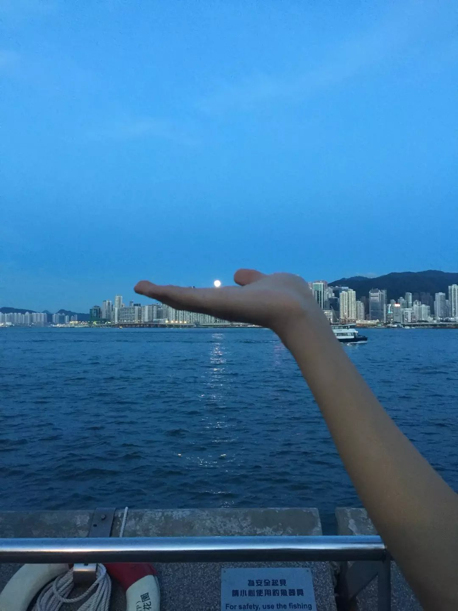

维多利亚港：港湾位于尖沙咀地区，可以乘坐港铁到尖沙咀站下车，往香格里拉酒店方向走，可能需要步行10多分钟，不是很近。如果你在对岸的铜锣湾可以到湾仔或者中环那边去做天星小轮可以直接抵达维港，一般维港是指的尖沙咀这边，因为这边的夜景最美丽，同时每晚的幻彩咏香江都在尖沙咀才能看到，星光大道也在维港这边哦。这里作为世界三大海港之一，确实名不虚传，维港水深面宽据说是天然良港，当然最美的仍是它的夜景，从尖沙咀这边望过去对面是中环、湾仔一线，这一些的高楼很多灯光布景十分特别，夜晚时分，所有灯光一起亮起格外明亮，在对岸的尖沙咀所见的美景就特别多.每晚这里都有幻彩咏香江的激光表演.  星光大道：维港的一侧就是著名的星光大道。星光大道也是观赏维港夜景的好地方.